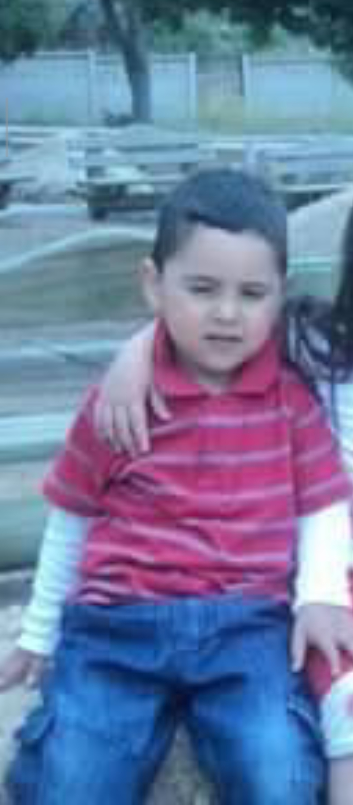
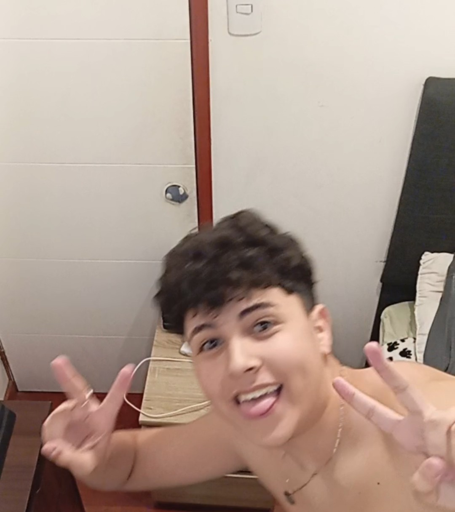

Mis inicios
Yo naci en Santiago de Chile, en una familia numerosa de 8 personas, vivi siempre feliz
conviviendo y jugando con mis hermanas y primos, tenia amigos del barrio, jugabamos a la pelota,
nos echabamos agua, en general tuve una infancia bonita y divertida, linda de recordar.

Mi etapa escolar
En 2015, a mis 6 años, entre al colegio que sigo estando, entre pensando que seria dificil o complicado
y al final me termino gustando porque ahi conoci a mis mejores amigos, con quienes comparti muchos momentos
de mi etapa aca en el colegio y sigo compartiendo hasta hoy.

Aprendizajes
Hasta el momento, este año a sido normal, entre al TP y cada vez estoy mas cerca de terminar el colegio,
el TP me a traido muchas oportunidades, como nuevos amigos, nuevas oportunidades, conocimientos, y en general,
he aprendido bien lo que me ofrecen, estoy trabajando en un proyecto junto a mi grupo que en general, tiene
buen aspecto, buen potencial, en general, el TP me a ayudado a crecer como persona, y a tener una mejor vision de lo que quiero
para mi futuro.
